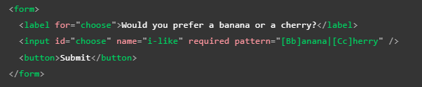

Este es un aspecto muy importante al implementar un formularios ya que nos permite definir que la información ingresada por los usuarios cumpla con las caracteriticas y necesidades de nuestra paguina, en otras palabras podemos defimir no solo el tipo de dato que deseamos recibir, si no que tambien el donde hacerlo y las caracteriticas obligatorias de esta información.
Las validaciones se pueden aplicar tanto en el lado del navegador (frontend) como en el lado del servidor (backend) , en el caso de HTML unicamamente se interactua con las validacines del lado del navegador, las validaciones en el navegador actuan como un primer filtro para la información ingresada en la paguina, lo cual las convierte en un recurso muy util para conseguir un mejor funcionamento en nuestra paguina.
Por lo tanto las validaciones en el navegador nos ayudan a:
Nota: Cabe resaltar que si bien estas validaciones son muy buena implementación no debe ser la unica medida de seguridad de la paguina, ya que por muy bien estructuradas y verificadas que esten un usuario malicioso aún puede alterar e inyectar datos en el envio de estos hacia el servidor
Una de las caracteriticas más resaltadas de los elementos de formulario modernos es su capacidad para validar la mayoria de los datos sin recurrir a JavaScript, esto atravez del uso de funciones las cuales estan disponibles de forma inherente a la mayoria de los elementos
Si los datos ingresados en el elemento cumple con todas pautas definidas para este se considera valido, en aquellos elementos definidos como validos :
Cuando un elemento no es valido:
Nota: A continuación se nombran los terminos utlizados para los casos de error que pudiesen cometer los usuarios incumpliendo las pautas del formulario resultando en elementos interpretados como invalidos:
Este codigo retorna un cuadro de texto al que se le hacignan estilos en base a su estatus, es decir al usar el atributo "required" la entrada será conpatible con las pseudo-clases ":required", ":invalid" y ":valid", por otro lado el elemento será considerado invalido en aquellos casos en los que se este por enviar el elemento bacio, por lo cual se mostrara un mensaje de elerta notificando de la falta.
Nota: El indicar cuando un el campo de un formulario es obligatoria no solo es una buena practica si no que es un requisito de las normas de accesibilidad de la WCAG
Nota: Tambien es una buena practica el preguntar solo lo necesario a los usuarios, los formularios excesibamente largos así como la información inrelebante pueden ser contra producentes
Minlength y Maxlength: Definen la longitud maxima y minima de los datos textuales, por lo que el elemento sera considerado invalido si el texto en este es inferior al minimo o superior al maximo definidos con estos atributos
Nota: los navegadores normalmente no permiten escribir un valor más largo de lo esperado
Nota: Un buena herramienta para la experienci del usuario es utilizar el atributo Maxlength junto con JavaScript para mostrar un contador de caracteres al usuario (por ejmemplo como lo hace twitter al twittear)
Min y Max: Espesifica los valores minimo y maximo de los elementos de entrada numericos, en otras palabras definen el rango en el que se debe encontrar el n{umero para ser aceptado, si el número no se encuentra dentro de estre el elemento se considerará invalido.
Este codigo define la cantidad de caracteres que pueden ser añadididos en un cuadro de texto así como el rango númerico que será aceptado en el elemento number, por lo tanto en el elemento texto si no cumple con el rango de caracteres requerido el elemento es tratado como invaldo, del mismo modo si el numero ingresado en el number no se encuentra en tre 1 y 10 sera considerado invalido, a continuación se muestra el resultado funcional de este codigo:
Nota: elementos tipo "number" "range" y "date" tambien pueden adoptar el atributo "step" el cual define en que cantidad incrementara o se reducira el valor cundo se usen controles de entrada (flechas arriba y abajo)
patter: Este atributo define una expresión regular que sera aceptada en el elemento, una expresión regular es una cadena de caracteres la cual al ser definida esta es identificada y diferencuada de cualquier otra por el navegador, por lo cual el atributo "patter" permite definir que unicamamete sean aceptadas ciertas cadenas de caracteres (numeros o palabras) que hallamos definido con anterioridad, por ejemplo:
Ejemplo funcional:
El resultado de ese codigo es el siguiete:
Las expresiones regulares diferencian entre mayusculas y minusculas por lo que se a definido la compatibilidad de los caracteres en el atributo "patter", por lo tato el input acepta cuatro expresiones regulares las cuales son: Banana, banana, Cherry y cherry, en este tipo de casos mientras la cadena de caracteres que el usuario ingrese sea diferente a la definida en "patter" este elemento sera reconosido como invalido.
Nota: para los stilos CSS de este ejemplo se utilizaron los basados en el status del elemento, los cuales ya fueron mostrados con anterioridad
Nota: Notodos los elementos input necesitan aplicar el atributo "patter" para definir expresiones regulares, por ejmplo el elemento "email", el cual define que el texto ingresado en este concuerde con el formato de un correo electronico
Nota: El elemento "textarea" no es compatible con el atributo "patter"
Se trata de todo aquel friendworks o codigo propio JavaScript utilizados para validar un formulario